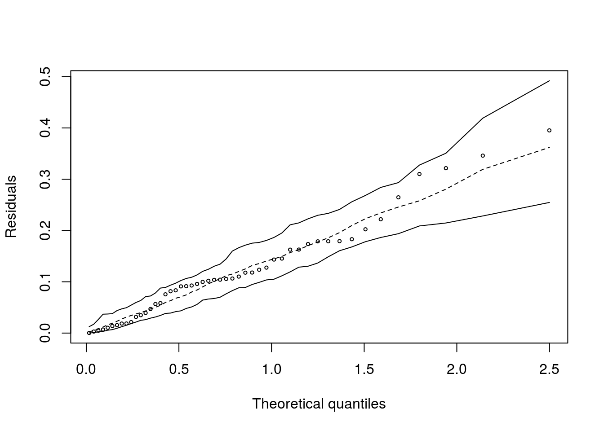

Resultados de um experimento conduzido para avaliar o desempenho de cinco tipos de turb de alta velocidade para motores de avião. Foram considerados dez motores para cada de turb e registrado o tempo (em unidades de milhões de ciclos) até a perda da velocidade.
with(PaulaTb2.1, boxplot(tempo ~ turb, xlab='Tipo de turbina',
ylab='tempo até perda de velocidade (milhões de ciclos)'))## tipo I tipo II tipo III tipo IV tipo V
## 10.693 6.050 8.636 9.798 14.706## tipo I tipo II tipo III tipo IV tipo V
## 23.226 8.497 10.828 33.712 23.652## tipo I tipo II tipo III tipo IV tipo V
## 0.4507 0.4818 0.3810 0.5926 0.3307## Gaussian model (glm object)## [1] 298.4ajuste1 <- glm(tempo ~ turb, family = 'Gamma'(link = 'identity'), data = PaulaTb2.1)
par(mfrow = c(2,2))
plot(ajuste1)## Gamma model## [1] 285.9Vamos estimar o parâmetro de dispersão.
## [1] 0.1969Baseado na deviance.
## [1] 0.2082Baseada na estatística X2 de Pearson.
## [1] 0.1723## Analysis of Deviance Table
##
## Model: Gamma, link: identity
##
## Response: tempo
##
## Terms added sequentially (first to last)
##
##
## Df Deviance Resid. Df Resid. Dev F Pr(>F)
## NULL 49 12.97
## turb 4 4.1 45 8.86 4.93 0.0022 **
## ---
## Signif. codes: 0 '***' 0.001 '**' 0.01 '*' 0.05 '.' 0.1 ' ' 1O resultado do teste fornece evidência altamente significativa de diferença entre os tempos médios de vida das turbinas.
##
## Call:
## glm(formula = tempo ~ turb, family = Gamma(link = "identity"),
## data = PaulaTb2.1)
##
## Deviance Residuals:
## Min 1Q Median 3Q Max
## -1.0434 -0.3306 -0.0774 0.2169 1.1345
##
## Coefficients:
## Estimate Std. Error t value Pr(>|t|)
## (Intercept) 10.693 1.543 6.93 1.3e-08 ***
## turbtipo II -4.643 1.773 -2.62 0.012 *
## turbtipo III -2.057 1.983 -1.04 0.305
## turbtipo IV -0.895 2.093 -0.43 0.671
## turbtipo V 4.013 2.624 1.53 0.133
## ---
## Signif. codes: 0 '***' 0.001 '**' 0.01 '*' 0.05 '.' 0.1 ' ' 1
##
## (Dispersion parameter for Gamma family taken to be 0.2082)
##
## Null deviance: 12.9654 on 49 degrees of freedom
## Residual deviance: 8.8616 on 45 degrees of freedom
## AIC: 285.9
##
## Number of Fisher Scoring iterations: 3A turbina II tem tempo médio de vida inferior à turbina I.
Vamos considerar a hipótese de que as turbinas podem ser divididas em três grupos, conforme os tempos de vida: Turbina II; Turbinas I, III e IV; Turbina V.
Vamos ajustar o mesmo MLG sob essa restrição (hipótese):
PaulaTb2.1$turb2 <- PaulaTb2.1$turb
levels(PaulaTb2.1$turb2) <- c('T134', 'T2', 'T134', 'T134', 'T5') Turb2 identifica as turbs I, III e IV da mesma forma.
ajuste2 <- glm(tempo ~ turb2, family = 'Gamma'(link = 'identity'), data = PaulaTb2.1)
anova(ajuste2, ajuste1, test='F') ## Analysis of Deviance Table
##
## Model 1: tempo ~ turb2
## Model 2: tempo ~ turb
## Resid. Df Resid. Dev Df Deviance F Pr(>F)
## 1 47 9.09
## 2 45 8.86 2 0.229 0.55 0.58A diferença das deviances dos dois modelos não é significativa. Logo, podemos optar pelo modelo restrito, em que os tempos médios de vida das turbinas I, III e IV são iguais (p=0,5807).
##
## Call:
## glm(formula = tempo ~ turb2, family = Gamma(link = "identity"),
## data = PaulaTb2.1)
##
## Deviance Residuals:
## Min 1Q Median 3Q Max
## -0.9763 -0.3307 -0.0515 0.2414 1.1474
##
## Coefficients:
## Estimate Std. Error t value Pr(>|t|)
## (Intercept) 9.709 0.808 12.01 6.2e-16 ***
## turb2T2 -3.659 1.189 -3.08 0.0035 **
## turb2T5 4.997 2.269 2.20 0.0326 *
## ---
## Signif. codes: 0 '***' 0.001 '**' 0.01 '*' 0.05 '.' 0.1 ' ' 1
##
## (Dispersion parameter for Gamma family taken to be 0.2079)
##
## Null deviance: 12.9654 on 49 degrees of freedom
## Residual deviance: 9.0906 on 47 degrees of freedom
## AIC: 283.2
##
## Number of Fisher Scoring iterations: 3Assim, temos a turbina V como aquela com maior tempo médio de vida, seguida pelas turbs I, III e IV e a turb II tem menor tempo médio de vida.
Tentando a distribuição normal inversa.
ajuste3 <- glm(tempo ~ turb2, family = inverse.gaussian(link = 'identity'), data = PaulaTb2.1)
hnp(ajuste3)## Inverse gaussian model
Vamos comparar as três distribuições usadas (normal, gama e normal inversa) com base nos AICs dos respectivos ajustes.
ajuste4 <- glm(tempo ~ turb2, family = gaussian(link = 'identity'), data = PaulaTb2.1)
AIC(ajuste2, ajuste3, ajuste4)## df AIC
## ajuste2 4 283.2
## ajuste3 4 284.4
## ajuste4 4 295.5Os dois modelos (gama e normal inverso) produziram AIC bastante próximos. Ainda assim, o modelo de regressão gama tem AIC ligeiramente menor e é preferível.